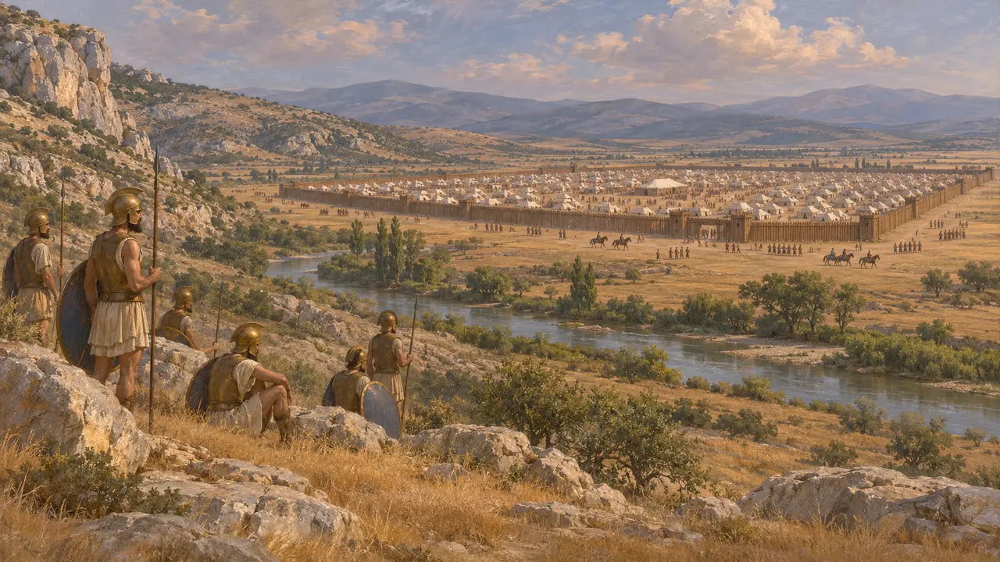
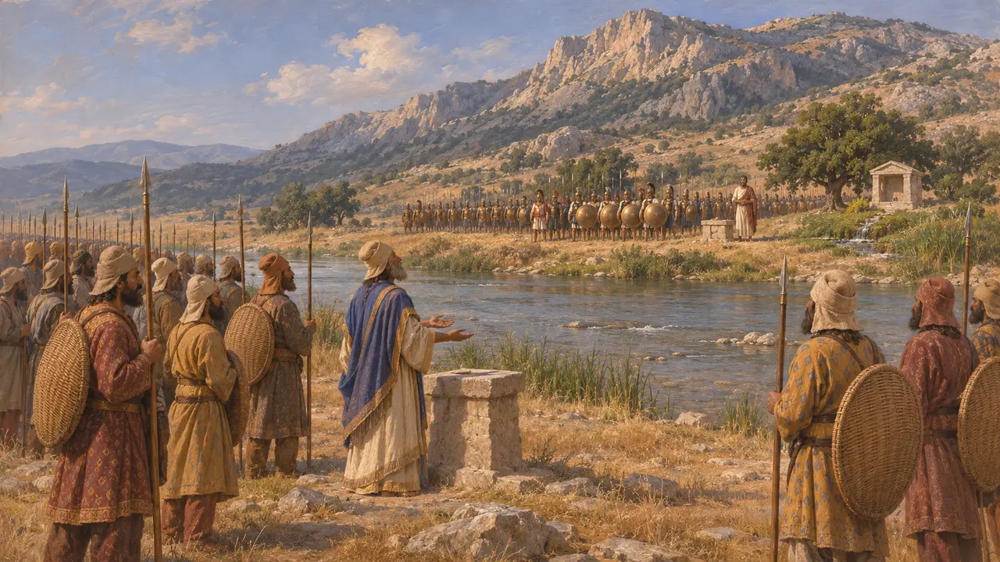
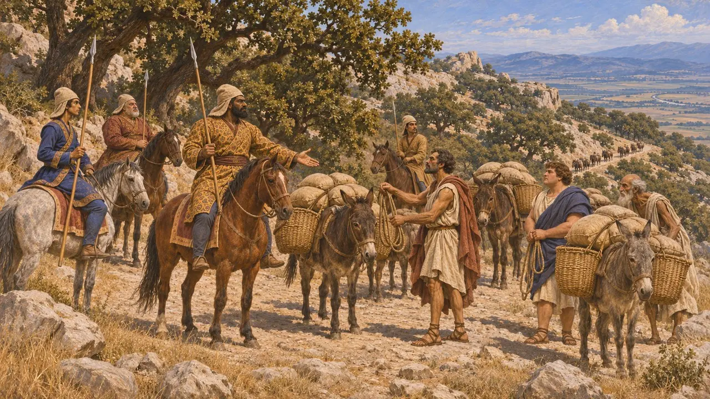
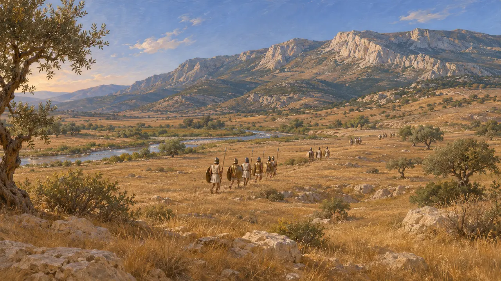
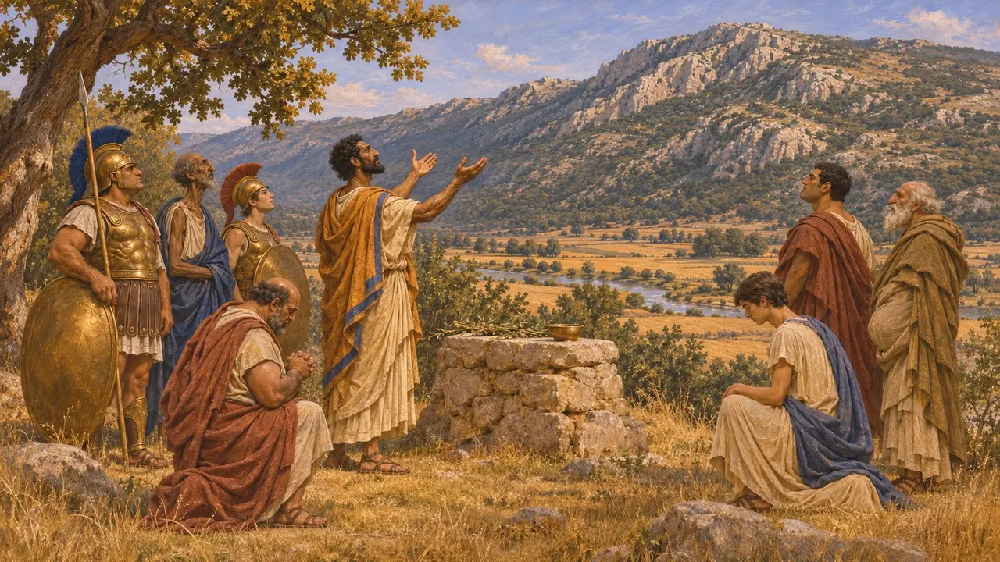

کوه کیتایرون و آسوپوس
کوه و رودی در مرز بئوتیا، میدان نبرد پلاته، 479 پ.م.
کیتایرون رشتهکوهی است که بئوتیا را از آتیکا و مگاریس جدا میکند، و آسوپوس رود کوچکی است که به سوی خاور از دشتِ زیر دامنههای شمالی آن میگذرد. در سال 479 پ.م. سپاه مردونیه و سپاه متحد یونانیان، به شمارش هرودوت، بیش از ده روز در این پهنه رودرروی هم ماندند تا نبرد پلاته درگرفت، و گذرگاهها، چشمهها و پشتههای این ناحیه شیوهٔ آن نبرد را رقم زدند.
در بازی: بازی این را میدان نبرد پلاته و صحنهٔ مرحلهٔ پلاته نشان میدهد. این با تاریخ همخوان است: سپاهیان سال 479 پ.م. در دشت آسوپوس، پای کوه کیتایرون و نزدیک شهر پلاته، اردو زدند و جنگیدند.

کوه، رود و اردوگاهها
روایت باستانیهرودوت میگوید مردونیه از آتیکا به بئوتیا رفت و در امتداد رود آسوپوس اردو زد؛ صف او از اریترای آغاز میشد، از کنار هوسیای میگذشت و به خاک پلاته میرسید. او در آنجا حصاری استوار از الوار ساخت که هر ضلعش نزدیک به ده استادیون بود. یونانیان از کوه کیتایرون گذشتند و نخست در دامنههای آن نزدیک اریترای جای گرفتند، جایی که شیب کوه آنان را از سوارهنظام پارسی در امان میداشت.
Herodotus 9.15; Herodotus 9.19

چشمبهراه بر دو کرانه
روایت باستانیهرودوت میگوید که پس از درگیری نخستین در نزدیکی اریترای، که در آن ماسیستیوس، فرماندهٔ سوارهنظام پارسی، کشته شد، یونانیان به سوی پلاته فرود آمدند، نزدیک چشمهٔ گارگافیا و زیارتگاه آندروکراتسِ پهلوان. در آنجا پیشگویان هر دو سو، تیسامنوس برای یونانیان و هگسیستراتوس برای مردونیه، فالها را تنها برای دفاع نیک یافتند، از این رو هیچیک از دو سپاه برای حمله از رود آسوپوس نگذشت.
Herodotus 9.20-25; Herodotus 9.33-37

گردنهها و چشمهها
روایت باستانیسپاه یونانی آذوقه و نیرو را از گذرگاههای کیتایرون میآورد. هرودوت میگوید مردی تبی به نام تیماگنیداس به مردونیه پند داد که گذرگاهی به نام «سرهای بلوط» را زیر نظر بگیرد، و سواران پارسی در آنجا حدود 500 چارپای باری را که از پلوپونز خوراک میآوردند به چنگ آوردند. سپس سوارهنظام یونانیان را از کنار آسوپوس راند و چشمهٔ گارگافیا را آلوده کرد، و همین یونانیان را به عقبنشینی شبانه به سوی جایی به نام «جزیره» در برابر پلاته واداشت.
Herodotus 9.38-39; Herodotus 9.49-51

یافتن جای میدان نبرد
مورد مناقشههرودوت نامها و فاصلهها را به دست میدهد اما نقشهای نمیآورد، و زمین نیز از روزگار باستان دگرگون شده است. پژوهشگران امروزی بر سر جای گارگافیا، «جزیره» و پرستشگاه دمتر، و در نتیجه بر سر اینکه هر دستهٔ یونانی در عقبنشینی شبانه چه اندازه جابهجا شد، همرأی نیستند. آنان همچنین بحث میکنند که آیا آن عقبنشینی، چنانکه هرودوت میگوید، فروپاشیای آشفته بود یا حرکتی سنجیده. رقم 300,000 نفر که او برای سپاه مردونیه میآورد، بهطور کلی بسیار گزاف دانسته میشود.
W. K. Pritchett, Studies in Ancient Greek Topography, 1965; J. F. Lazenby, The Defence of Greece 490-479 BC, 1993

کوه در اسطوره و پیشگویی
افسانهٔ متأخردر سنت یونانی، کیتایرون سرزمینی وحشی و مقدس برای دیونیسوس بود؛ جایی که پنتئوس در آن تکهتکه شد و ادیپِ نوزاد را برای مردن در آن رها کردند. پلوتارک، که سدهها پس از نبرد مینوشت، روایت میکند که پیشگویی به آتنیان گفت به درگاه خدایان کیتایرون نیایش کنند و در دشت دمتر بجنگند، و مردم پلاته برای تحقق آن سرزمین خود را به آتن واگذاشتند. این داستانها نشان میدهند که این مکان چگونه در یادها ماند، نه اینکه لشکرکشی چگونه طرحریزی شد.
Euripides, Bacchae; Sophocles, Oedipus Tyrannus; Plutarch, Aristides 11
منابع
- Herodotus, Histories, book 9
- W. K. Pritchett, Studies in Ancient Greek Topography, 1965
- J. F. Lazenby, The Defence of Greece 490-479 BC, 1993
- Plutarch, Aristides 11
- Pausanias, Description of Greece, book 9
- P. Briant, From Cyrus to Alexander, 2002